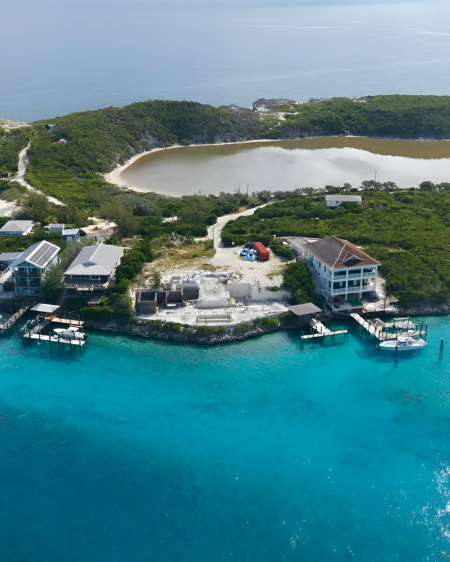
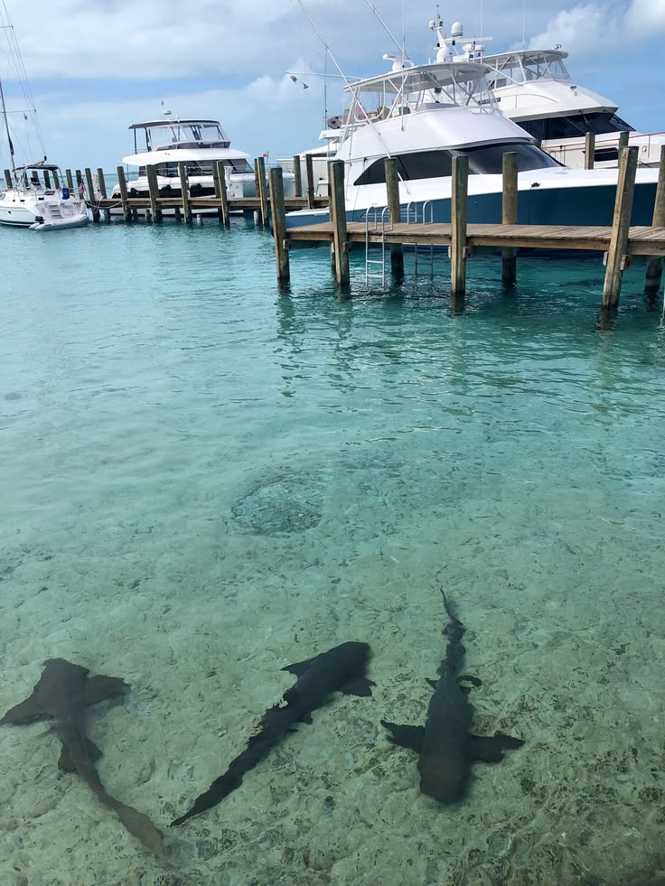
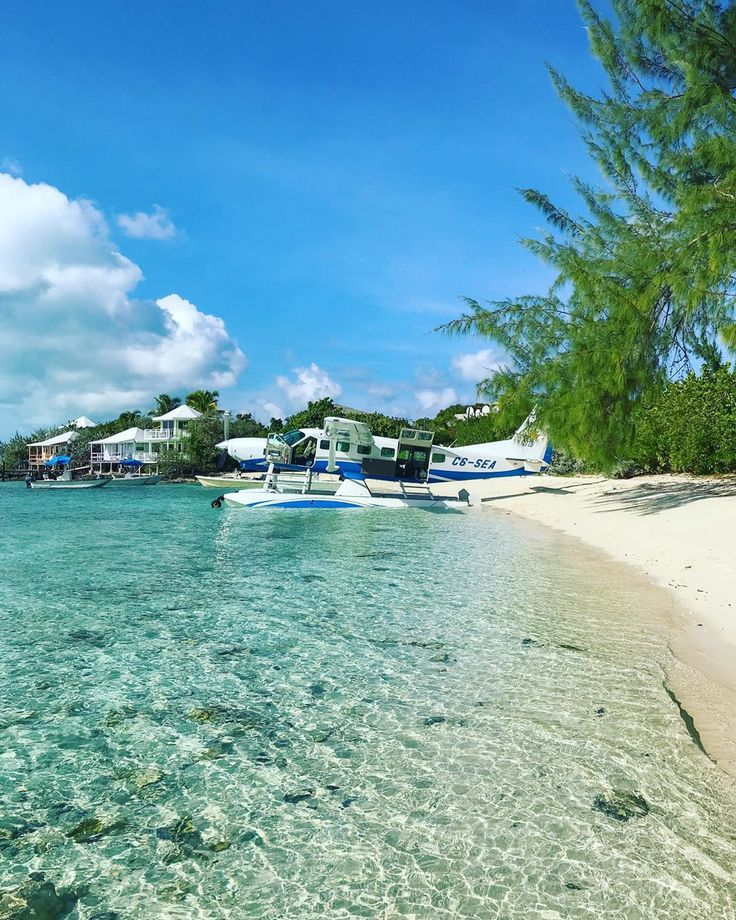
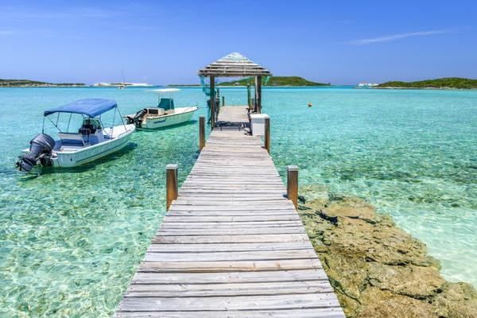
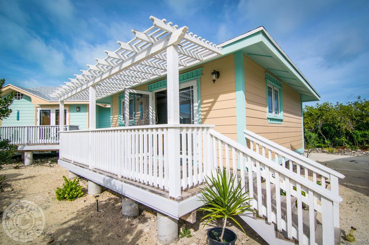

STANIEL CAY
Island Paradise
Brilliant turquoise water, beautiful beaches and small islands create a distinctive setting for exploring the Exumas. Take time to enjoy the scenery and the relaxed island atmosphere.

Your guide to island stays, beautiful beaches and unforgettable Exuma adventures.
Turquoise waters, white-sand beaches, remarkable marine life and unforgettable island adventures await.
Staniel Cay is a popular base for exploring the central Exuma Cays. Surrounded by clear water, small islands, reefs and white-sand beaches, it offers access to some of the region’s most memorable experiences.
From visiting the famous swimming pigs at Big Major Cay to snorkeling at Thunderball Grotto and seeing the nurse sharks at Compass Cay, the surrounding islands offer plenty to discover. Boat trips make it possible to experience several highlights in a single day, depending on weather and sea conditions.
Explore the beaches, turquoise waters, neighboring islands and memorable scenery around Staniel Cay.

Brilliant turquoise water, beautiful beaches and small islands create a distinctive setting for exploring the Exumas. Take time to enjoy the scenery and the relaxed island atmosphere.

Discover peaceful stretches of white sand where you can unwind, swim and enjoy the clear Bahamian water. Some beaches around the cays are most conveniently reached by boat.

The waters surrounding Staniel Cay are known for their clarity and vivid shades of blue. The views are spectacular from shore and while traveling between islands.

Use Staniel Cay as a starting point for boat trips to nearby cays, beaches, sandbars and well-known Exuma attractions. Plan stops around the day’s conditions and your interests.

Whether you are relaxing by the water, exploring neighboring islands or heading out on a boat adventure, Staniel Cay is a wonderful place from which to discover the Exuma Cays.
The clear waters around Staniel Cay offer opportunities for snorkeling and swimming among tropical fish and fascinating underwater landscapes. Choose suitable locations, follow local guidance and respect marine life.
Choose experiences that suit your interests, schedule and sea conditions.
Explore suitable reefs and underwater habitats, keeping a respectful distance from wildlife and coral.
Visit Big Major Cay to see the well-known swimming pigs. Follow local guidance and do not feed wildlife unless specifically permitted.
Compass Cay is known for nurse shark encounters. Follow site rules and instructions from local guides.
Spend time on a quiet beach, swim where conditions are safe and enjoy the spectacular turquoise water.
Explore several cays and attractions on an island-hopping trip. Check weather, tides and access requirements before departure.
Fishing excursions may be available through local operators. Check applicable regulations and arrange your trip with a qualified provider.
Photograph the island scenery, explore clear-water coves, visit nearby attractions or relax on a sandbar. Plan your stay and boat activities to make the most of your time in the Exuma Cays.
Exuma Sport Coast Service · Exuma, Bahamas, opposite the airport · exumaaccomodations@gmail.com
© 2026 Exuma Sport Coast Service · All rights reserved.